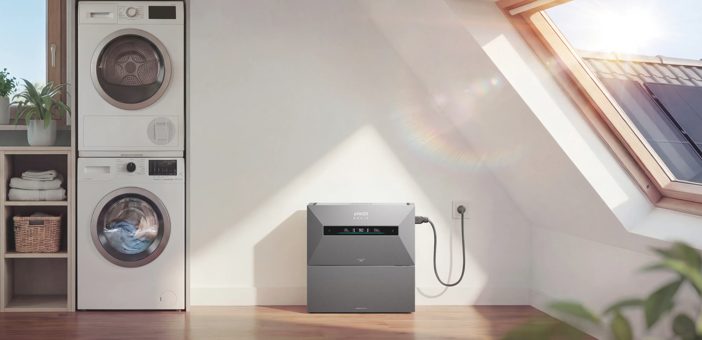
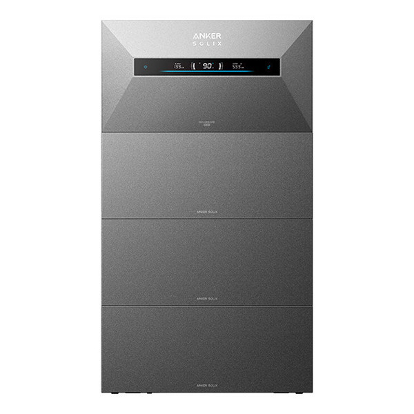
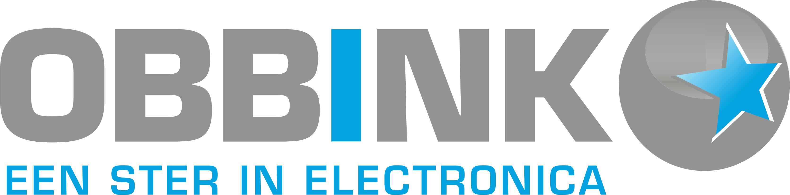

ENERGIEOPSLAG VOOR THUIS
Meer uit uw energie met een thuisbatterij.
Met een thuisbatterij kunt u energie opslaan en op een later moment gebruiken. Dat kan bijvoorbeeld interessant zijn in combinatie met zonnepanelen of een slim energiecontract. Welke oplossing bij u past, hangt af van uw woning, energieverbruik en de manier waarop u energie wilt gebruiken.

ANKER SOLIXSlimme energieopslag voor thuis
HOE WERKT HET?
Wat doet een thuisbatterij?
Een thuisbatterij slaat elektrische energie tijdelijk op, zodat u die op een later moment kunt gebruiken. Zo kunt u zonnestroom bewaren voor later en energie gebruiken op een ander moment dan waarop deze wordt opgewekt.
Zonnestroom bewaren
Gebruik meer van de energie die u zelf opwekt, ook wanneer de zon niet schijnt.
Uw energie slim gebruiken
Een batterij helpt om het moment van opwekking en verbruik beter op elkaar af te stemmen.
Sturing die past
Er zijn mogelijkheden voor slimme energiesturing. Wat verstandig is, hangt af van uw situatie.
WANNEER INTERESSANT?
Past een thuisbatterij bij uw situatie?
Een goede keuze begint niet bij een vast aantal kilowattuur, maar bij de manier waarop uw woning en huishouden energie gebruiken.
Wat maakt een thuisbatterij écht slim?
Lees het antwoord →Welk energiecontract past bij een slimme thuisbatterij?
Lees het antwoord →Hoe groot moet mijn thuisbatterij zijn?
Lees het antwoord →VEILIGHEID EERST
Een thuisbatterij is onderdeel van uw elektrische installatie.
Jarenlang draaide het om zoveel mogelijk stroom opwekken. Nu gaat het om slim omgaan met energie.
Met een thuisbatterij helpt Obbink u om opgewekte stroom op het juiste moment op te slaan, te gebruiken en beter te benutten.
Maar een thuisbatterij is ook onderdeel van uw elektrische installatie. Daarom moeten plaatsing, aansluiting, beveiliging en instellingen goed passen bij uw woning. Obbink Service kan de installatie professioneel verzorgen en zorgen voor een veilige, correcte oplevering.
PERSOONLIJK ADVIES
Welke thuisbatterij past bij u?
Geen woning en geen energieverbruik is hetzelfde. Daarom bespreken onze specialisten graag uw persoonlijke situatie met u.
Neem indien mogelijk mee:
- jaarlijks elektriciteitsverbruik
- aantal zonnepanelen
- vermogen/type omvormer indien bekend
- type energiecontract
- foto van de meterkast
- wensen voor energieopslag
ANKER SOLIX
ANKER SOLIX voor grotere energiebehoefte
Slimme energieopslag is niet alleen interessant voor woningen. Ook voor ondernemers, kantoren en andere situaties met een hoger energieverbruik kan energieopslag een interessante oplossing zijn. Met ANKER SOLIX kijken we naar een systeem dat past bij het verbruik, de installatie en de gewenste capaciteit.
Ook zakelijk adviseren we vanuit de praktijk: passend, schaalbaar en professioneel geïnstalleerd. Vraag zakelijk advies aan

Advies dat verder gaat dan de batterij
Een thuisbatterij koopt u niet zomaar. Het systeem moet passen bij uw woning, zonnepanelen, energieverbruik én uw plannen voor de toekomst.
Bij Obbink krijgt u daarom persoonlijk advies van mensen die begrijpen hoe energie in huis werkt. We kijken niet alleen naar capaciteit en prijs, maar naar wat in uw situatie echt zinvol is.
Al sinds 1934 zijn we bezig met elektriciteit en techniek. Waar Gerrit Obbink in de jaren dertig stroom bracht bij boeren rond Winterswijk, helpen we huishoudens vandaag om hun eigen energie slimmer op te wekken, op te slaan en te gebruiken.
Persoonlijk advies. Duidelijke uitleg. Een oplossing die bij u past.
Techniek die werkt. Ook na de aankoop.
Een goed advies is pas waardevol als de techniek erachter klopt. Daarom stopt onze betrokkenheid niet bij de verkoop.
Obbink Service beoordeelt de technische situatie, verzorgt waar nodig de installatie en zorgt voor een correcte oplevering. En ook daarna kunt u op ons rekenen voor service, ondersteuning en technische kennis.
We combineren bijna een eeuw ervaring met de techniek van vandaag: van de eerste elektriciteitsaansluitingen tot zonnepanelen, slimme energiesturing en thuisbatterijen.
Eén vertrouwd adres voor advies, installatie én service.ONZE OPLOSSING VOOR ENERGIEOPSLAG
ANKER SOLIX
ANKER SOLIX is onze belangrijkste oplossing voor energieopslag. Het systeem biedt slimme energieopslag met verschillende oplossingen en capaciteiten. Welk systeem passend is, hangt af van uw woning, installatie en energiegebruik; persoonlijk advies blijft daarom belangrijk.
Bekijk ANKER SOLIX en thuisbatterijen bij Obbink